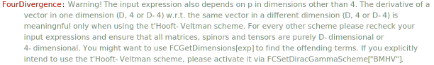

FourDivergence[exp, FV[p, mu]] calculates the partial
derivative of exp w.r.t p^{\mu }.
FourDivergence[exp, FV[p, mu], FV[p,nu], ...] gives the
multiple derivative.
SP[p, q]
FourDivergence[%, FV[q, \[Mu]]]\overline{p}\cdot \overline{q}
\overline{p}^{\mu }
SP[p - k, q]
FourDivergence[%, FV[k, \[Mu]]](\overline{p}-\overline{k})\cdot \overline{q}
-\overline{q}^{\mu }
SFAD[{p, m^2}]
FourDivergence[%, FVD[p, \[Nu]]]\frac{1}{(p^2-m^2+i \eta )}
-\frac{2 p^{\nu }}{(p^2-m^2+i \eta )^2}
FVD[l, \[Mu]] FAD[{l, 0}, {l - p, 0}]
FourDivergence[%, FVD[l, \[Mu]]]\frac{l^{\mu }}{l^2.(l-p)^2}
\frac{D}{l^2.(l-p)^2}-\frac{2 l^2}{\left(l^2\right)^2.(l-p)^2}+\frac{2 (l\cdot p)-2 l^2}{l^2.(l-p)^4}
SP[p, w]*SpinorUBar[p2, m] . GS[w] . SpinorU[p1, m]
FourDivergence[%, FV[w, a]]\left(\overline{p}\cdot \overline{w}\right) \bar{u}(\text{p2},m).\left(\bar{\gamma }\cdot \overline{w}\right).u(\text{p1},m)
\left(\overline{p}\cdot \overline{w}\right) \left(\varphi (\overline{\text{p2}},m)\right).\bar{\gamma }^a.\left(\varphi (\overline{\text{p1}},m)\right)+\overline{p}^a \left(\varphi (\overline{\text{p2}},m)\right).\left(\bar{\gamma }\cdot \overline{w}\right).\left(\varphi (\overline{\text{p1}},m)\right)
Differentiation of 4-vectors living in different dimensions (4, D, D-4) works only in the t’Hooft-Veltman scheme
FourDivergence[FVD[p, mu], FV[p, nu]]
\text{\$Aborted}
FCSetDiracGammaScheme["BMHV"];FourDivergence[FVD[p, mu], FV[p, nu]]\bar{g}^{\text{mu}\;\text{nu}}